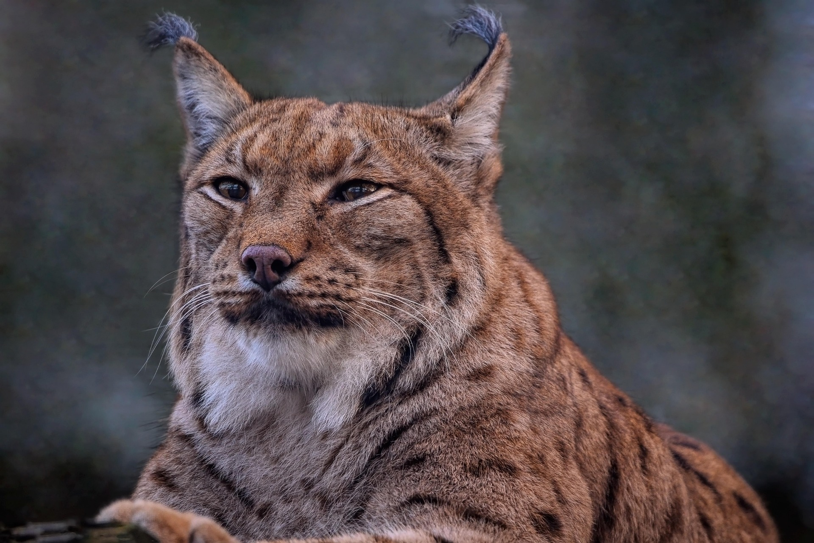

LINCE
(LYNX)

HÁBITAT Y ESTILO DE VIDA
Los linces son felinos fascinantes y muy variados. Dependiendo de la especie (como el lince ibérico, el canadiense o el boreal),
los linces se encuentran principalmente en el hemisferio norte (Europa, Asia y Norteamérica).
Prefieren los bosques densos (coníferas, boreales o mediterráneos), pero también pueden vivir en zonas de tundra.
Buscan áreas con vegetación espesa o roquedos para esconderse y criar a sus cachorros.
CARACTERÍSTICAS PRINCIPALES
- Tienen mechones de pelo negro en las puntas de las orejas que mejoran su audición.
- A diferencia de otros felinos, su cola es muy pequeña y suele tener la punta negra.
- Poseen una especie de "barba" o pelaje largo en las mejillas que les da un aspecto muy característico.
- Sus patas son grandes y peludas, lo que les permite caminar sobre la nieve sin hundirse.
- Tienen una visión nocturna extraordinaria; se dice que pueden ver a un ratón a 75 metros de distancia.
MORE INFORMATION
MENU